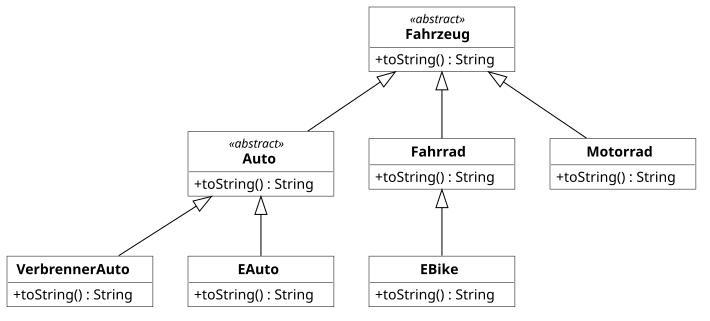
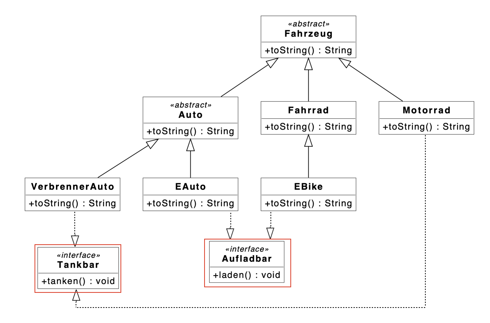

Praktikum 8: Type-Casting
In diesem Praktikum wollen wir den Einsatz von Type-Casting in Java üben.
🚀 Lernziele
Sie können:
- Type-Casting für Objekte zielgerichtet anwenden
- Down-Casting sicher einsetzen
- Typische Probleme beim Type-Casting erkennen und lösen
🤔 Vorbereitung
Dieses Mal gibt es keine Vorbereitungsaufgaben. Bitte schließen Sie die vorherigen Praktikumsaufgaben ab.
📝 Pflichtaufgaben (1 Bonuspunkt)

1 - Fahrzeug-Klassen definieren
Setzen Sie bitte das Klassendiagramm so wie gegeben in Java-Code um. Beachten Sie bitte unbedingt die folgenden Hinweise:
- Sie können alle Klassen ausnahmweise der Einfachheit halber in eine Datei schreiben (Fahrzeuge.java).
- Wie im Klassendiagramm dargestellt, haben die Klassen bis auf die (zu überladene) toString-Methode bewusst keine weiteren Attribute und Methoden.
Teilaufgaben:
- Klassen: Setzen Sie bitte alle Klassen entsprechend dem Klassendiagramm um.
- toString-Methode: Überschreiben Sie für jede Klasse die toString-Methode und geben Sie den Namen der Fahrzeugklasse als String zurück, z.B. "Motorrad".
- Liste mit Fahrzeugen: Erstellen Sie in der Main.java eine gemeinsame Liste für alle Fahrzeuge. Fügen Sie dieser Liste exemplarisch von jedem Fahrzeugtyp ein Objekt hinzu.
- Ausgabe der Fahrzeuge: Geben Sie alle Fahrzeuge der Liste mit einer foreach-Schleife aus.
2 - Weitere Schnittstellen

Wir erweitern unsere Fahrzeug-Klassen nun um weitere Schnittstellen, die spezifische Fähigkeiten der Fahrzeuge umsetzen sollen. Setzen Sie diese bitte um und passen Sie ggf. Ihre bestehenden Fahrzeugklassen an.
3 - Type-Casting für Fahrzeuge
In dieser Aufgabe werden wir den Einsatz von Type-Casting bei Objekten konkret anhand unserer Fahrzeug-Klassen üben. Bearbeiten Sie dazu bitte die folgenden Teilaufgaben.
Teilaufgaben:
- Kopieren Sie bitte ihre Fahrzeuge.java von Aufgabe 1.
- Fehler korrigieren: Die Main.java verwendet unsere Fahrzeug-Klassen. Dabei sind einige Fehler aufgetreten. Finden und beheben Sie diese bitte, insofern dies möglich ist. Denken Sie daran, dass es auch Laufzeitfehler geben kann.
⭐ Zusatzaufgaben (1 Bonuspunkt)
4 - Type-Casting und Schnittstellen
Lösen Sie bitte die folgenden Teilaufgaben.
Teilaufgaben:
- Kopieren Sie zunächst Ihre bestehenden Fahrzeug-Klassen aus Aufgabe 1 in Fahrzeuge.java.
- Legen Sie bitte eine gemeinsame Liste für alle Fahrzeuge an (siehe Aufgabe 1).
- Erstellen Sie eine foreach-Schleife, die dafür sorgt, dass alle aufladbaren Fahrzeuge geladen werden.
- Legen Sie nun eine weitere gemeinsame Liste allerdings nur für alle aufladbaren Fahrzeuge an.
- Kopieren Sie nun (foreach-Schleife) alle aufladbaren Fahrzeuge ihrer urspünglichen Liste in diese neue Liste für aufladbare Fahrzeuge.
- Sorgen Sie dafür, dass wieder alle Fahrzeuge der neuen Liste (aufladbare Fahrzeuge) geladen werden. Geht das dieses Mal einfacher?